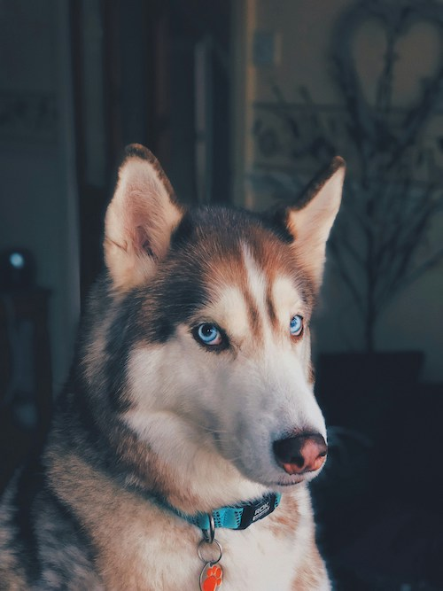

I think that dogs are better than cats because dogs are more playful and they are much more fun then cats. Dogs will go outside and play with you while cats just sit in the house and make a mess and eat food. Dogs are much better because they are also more open as cats are solitary and only keep to themselves. This can help with boredom and if you just need someone to spend some time with you and to have some fun.
